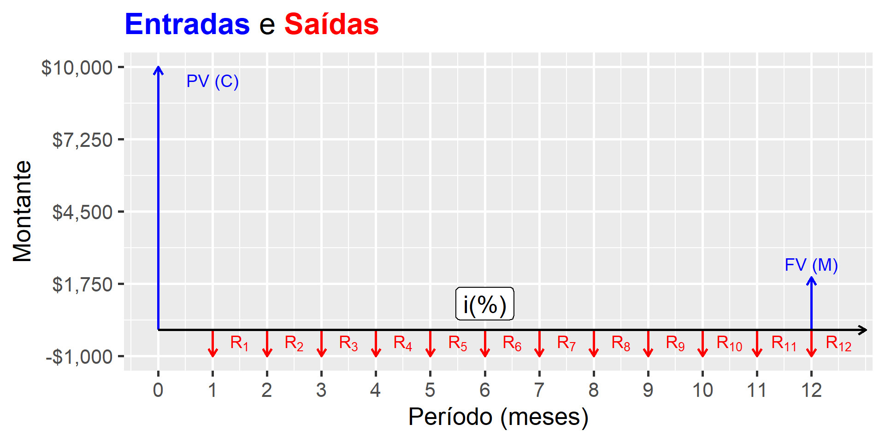
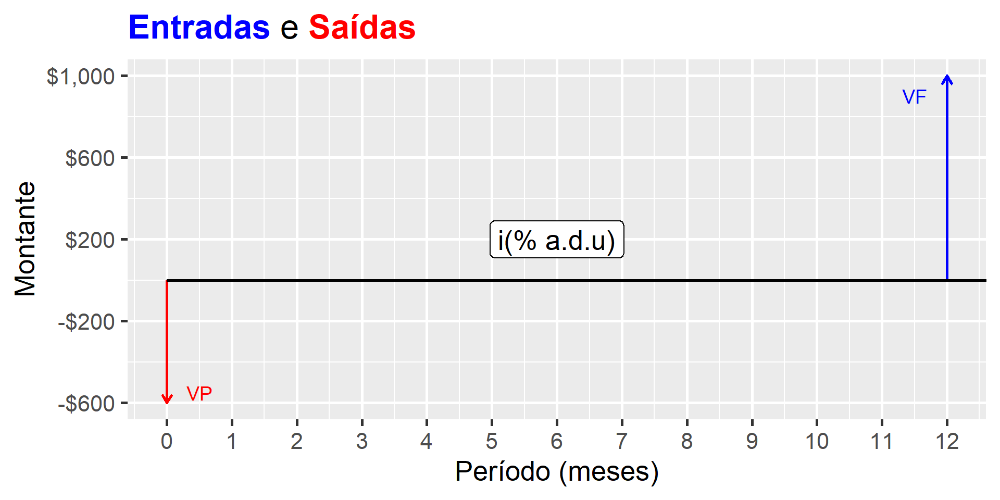
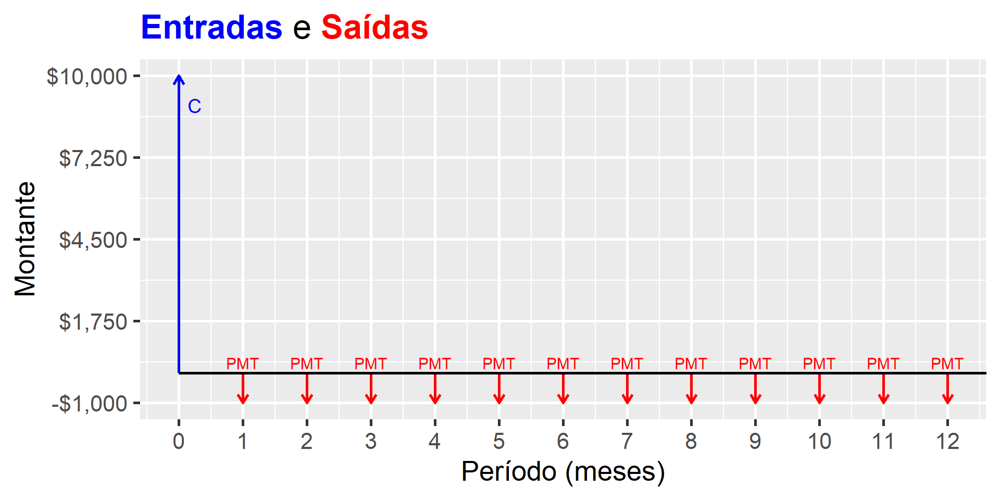
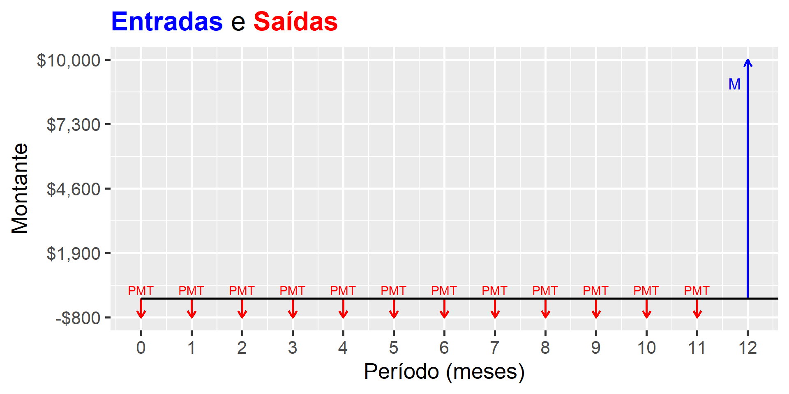

| Estoque | Fluxo |
|---|---|
| Riqueza | Renda |
| Dívida Pública | Déficit Público |
| Ação | Dividendo |
| Valor de uma propriedade | Aluguel |
Relação entre Estoque e Fluxo. Fonte: Adaptada de Malpezzi e Wachter (2002)
Avaliação de Aluguéis
22 de dezembro de 2025
| Estoque | Fluxo |
|---|---|
| Riqueza | Renda |
| Dívida Pública | Déficit Público |
| Ação | Dividendo |
| Valor de uma propriedade | Aluguel |
Relação entre Estoque e Fluxo. Fonte: Adaptada de Malpezzi e Wachter (2002)

Figura 1: Um Fluxo de Caixa Simples
É necessário um conhecimento básico de matemática financeira para compreender e aplicar a Engenharia de Avaliações de Aluguéis
A matemática financeira é o ramo da matemática aplicado à análise e solução de problemas financeiros
Envolve conceitos como:
O desconto comercial será maior e irá representar uma taxa maior do valor a ser efetivamente pago:
O desconto comercial só deve ser utilizado para curtos períodos. Em periodos muito longos, o desconto comercial pode ser maior do que o valor do título.
O desconto racional é mais complexo, porém é preciso para grandes períodos de tempo.
Os juros compostos também são comuns na análise de investimentos e financiamentos
Estes incidem não apenas sobre o capital inicial investido, mas também sobre os juros auferidos a cada período, conforme a Equação 5:
Ex.: Calcular os juros a que o investidor teria direito se a incorporadora o remunerasse a uma taxa de juros composta de 1,5% a.m.:
Quanto trabalhando com juros compostos, é importante conhecer o período de capitalização.
Por exemplo:
Duas taxas expressas em períodos diferentes são equivalentes quando, aplicadas a uma mesmo capital e em um mesmo intervalo de tempo, produzem o mesmo montante.
Uma taxa anual pode ser transformada para uma taxa semestral ou uma taxa mensal (ou bimestral, trimestral, etc.) ou ainda para uma taxa ao dia, ou ao dia útil, da maneira que for mais conveniente.
Ex.: a caderneta de poupança remunera a uma taxa de 0,50% a.m., acrescida da Taxa Referencial (TR):
É um taxa nominal, usualmente expressa ao ano, porém computada por dia útil (d.u.):
A taxa efetiva, portanto, em um dia útil, é:
Uma aplicação de R$ 10.000,00 a uma taxa over de 15% a.a., durante 22 dias úteis, qual a taxa efetiva e o saldo ao final do período?

Figura 2: Fluxo de Caixa de uma LTN.
Anuidades ou rendas certas são séries de pagamentos ou recebimentos iguais, com intervalos de tempo iguais.
As anuidades podem ser de diversos tipos (Gotardelo 2023, 53):
As anuidades ainda podem ser:

Figura 3: Fluxo de Caixa de uma Amortização.
Se sabemos que a taxa de juros do financiamento é de 1,40% a.m.:
Podemos calcular VP facilmente através da Equação 11:
Assim, para o exemplo acima, através da Equação 11, temos:

Figura 4: Fluxo de Caixa de uma Capitalização.
Pela análise da Equação 11, percebe-se que o valor presente das anuidades é função:
Este fator, denominado Fator de Valor Presente, FVP, pode ser tabelado;
Analogamente, pela análise da Equação 12, percebe-se que o Montante das anuidades é função:
Este fator, denominado Fator de Acumulação do Capital, FAcC, pode ser tabelado;
| n | 1% | 2% | 3% | 4% | 5% | 6% | 7% | 8% | 9% | 10% |
|---|---|---|---|---|---|---|---|---|---|---|
| 1 | 0,9901 | 0,9804 | 0,9709 | 0,9615 | 0,9524 | 0,9434 | 0,9346 | 0,9259 | 0,9174 | 0,9091 |
| 2 | 1,9704 | 1,9416 | 1,9135 | 1,8861 | 1,8594 | 1,8334 | 1,8080 | 1,7833 | 1,7591 | 1,7355 |
| 3 | 2,9410 | 2,8839 | 2,8286 | 2,7751 | 2,7232 | 2,6730 | 2,6243 | 2,5771 | 2,5313 | 2,4869 |
| 4 | 3,9020 | 3,8077 | 3,7171 | 3,6299 | 3,5460 | 3,4651 | 3,3872 | 3,3121 | 3,2397 | 3,1699 |
| 5 | 4,8534 | 4,7135 | 4,5797 | 4,4518 | 4,3295 | 4,2124 | 4,1002 | 3,9927 | 3,8897 | 3,7908 |
| 6 | 5,7955 | 5,6014 | 5,4172 | 5,2421 | 5,0757 | 4,9173 | 4,7665 | 4,6229 | 4,4859 | 4,3553 |
| n | 1% | 2% | 3% | 4% | 5% | 6% | 7% | 8% | 9% | 10% |
|---|---|---|---|---|---|---|---|---|---|---|
| 1 | 1,0000 | 1,0000 | 1,0000 | 1,0000 | 1,0000 | 1,0000 | 1,0000 | 1,0000 | 1,0000 | 1,0000 |
| 2 | 2,0100 | 2,0200 | 2,0300 | 2,0400 | 2,0500 | 2,0600 | 2,0700 | 2,0800 | 2,0900 | 2,1000 |
| 3 | 3,0301 | 3,0604 | 3,0909 | 3,1216 | 3,1525 | 3,1836 | 3,2149 | 3,2464 | 3,2781 | 3,3100 |
| 4 | 4,0604 | 4,1216 | 4,1836 | 4,2465 | 4,3101 | 4,3746 | 4,4399 | 4,5061 | 4,5731 | 4,6410 |
| 5 | 5,1010 | 5,2040 | 5,3091 | 5,4163 | 5,5256 | 5,6371 | 5,7507 | 5,8666 | 5,9847 | 6,1051 |
| 6 | 6,1520 | 6,3081 | 6,4684 | 6,6330 | 6,8019 | 6,9753 | 7,1533 | 7,3359 | 7,5233 | 7,7156 |